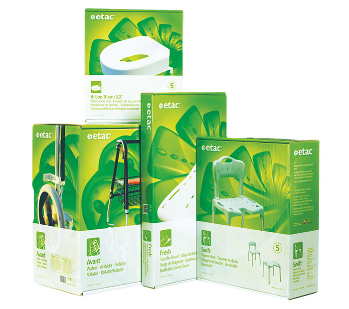
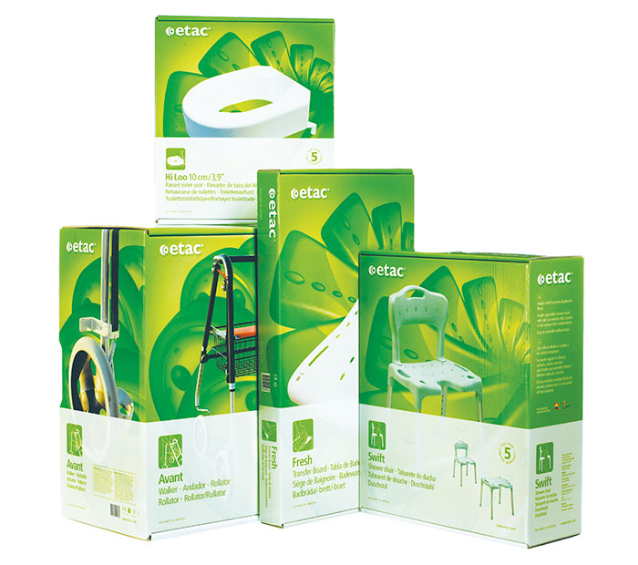

Håkan Schallinger är en stockholmsbaserad designer som arbetar med förpackningsdesign och grafiska identiteter. Han har utvecklat designkoncept för varumärken som ProViva, Felix och Skånemejerier.
Tjänster:
Förpackningsdesign
Grafisk identitet
Logotyp & symboler
Illustration
Kontakt:
hakan@logotypica.se
+46 (0) 70-791 88 97

 
